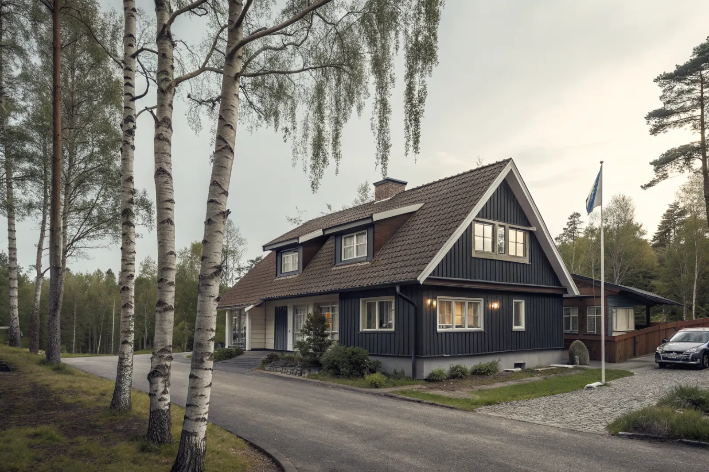

Takbyte i Haninge
Byte av tegel-, betong- och plåttak.
Takbyte i Haninge →Haninge söder om Stockholm sträcker sig från Handen och Vendelsö ut till Dalarö och skärgården. Vi är takläggare i Haninge för villor, radhus och sommarhus i bland annat Vendelsö, Brandbergen, Tungelsta, Västerhaninge och Dalarö.
Vendelsö och Brandbergen har mycket bebyggelse från 1970-talet och framåt, där villor och radhus med betongpannor nu når åldern för takbyte. Västerhaninge och Tungelsta har både äldre villor och nyare områden – Tungelsta har sina rötter i handelsträdgårdarna.
Dalarö är en gammal skärgårdsort med sekelskiftesvillor, sommarvillor och kulturhistoriska miljöer. Här är taken ofta av plåt eller tegel med detaljer som behöver bevaras, och läget vid havet ger salt luft och hård vind.
Fritidshus på öar som Ornö och Utö kräver båt- eller färjetransport av material, vilket vi i så fall planerar särskilt.
Oavsett om du behöver ett komplett takbyte eller en riktad renovering ger vi en tydlig bedömning och offert. Vi arbetar även i grannområden – se alla områden vi arbetar i.

I 70- och 80-talsområdena i Vendelsö och Brandbergen är det betongpannor och underlagspapp som åldrats. Typiskt är vittrade pannor, spröd papp vid takfoten och läckage kring ventilationshuvar. På radhus är plåten på brandväggarna ofta det första som ger efter.
På Dalarö och längs kusten sliter salt och vind på plåt, spik och beslag. Där väljer vi korrosionsbeständig plåt och fästelement och lägger extra vikt vid infästningen av nock, vindskivor och takfotsplåt.
Bygglov hanteras av Haninge kommun. Byte till samma material och kulör kräver normalt inget lov. Dalarö har kulturhistoriskt värdefulla miljöer där detaljplanen kan ställa krav på material och utseende – stäm av med kommunen innan du ändrar något.
Avståndet från vår bas i Bromma gör att vi samlar besiktningar och planerar etableringen noga, så att arbetet kan pågå i ett sammanhang när det väl har startat.
Byte av tegel-, betong- och plåttak.
Takbyte i Haninge →Riktade åtgärder som förlänger takets liv.
Takrenovering i Haninge →Bedömning av skick inför beslut.
Takbesiktning i Haninge →Nytt ytskydd på plåttak.
Takmålning i Haninge →Skonsam tvätt och mossbehandling.
Taktvätt i Haninge →Nytt plåttak och plåtarbeten.
Plåttak i Haninge →Vi utgår från Bromma (Mariehäll) och tar uppdrag i hela Storstockholm, även Haninge. Vi planerar resor och etablering så att arbetet går effektivt trots avståndet.
Läs mer om tak på villa eller jämför takbyte och takrenovering innan du bestämmer dig.
Vi arbetar även i Tyresö.
Takläggare i Tyresö →Vi arbetar även i Huddinge.
Takläggare i Huddinge →Vi arbetar även i Farsta.
Takläggare i Farsta →